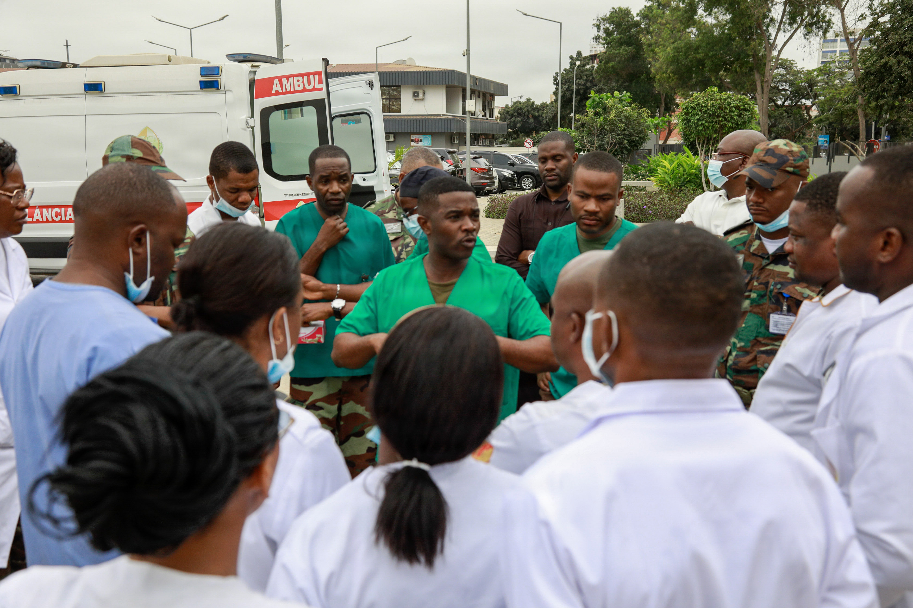

创伤急救与灾难医学总论Introduction to Trauma Resuscitation and Disaster Medicine
从单个创伤患者的优先评估，到批量伤员事件中的团队、资源与再评估。4 个学时把创伤优先级、xABCDE、早期复苏、灾难资源失衡和综合推演连成课堂可用的教学路线。From priority assessment of a single trauma patient to team, resource, and reassessment thinking during mass-casualty events. Four lessons connect trauma priority language, xABCDE, early resuscitation, disaster resource imbalance, and integrated simulation into a classroom-ready route.
本课程仅用于医学教育、课堂讨论和模拟训练，不替代本院制度、上级医师决策或正式临床指南。This course is for medical education, classroom discussion, and simulation training only. It does not replace institutional policy, senior clinician decisions, or formal clinical guidelines.
从一位患者到整个系统：优先评估 → 团队协作 → 资源变化 → 双层复评From one patient to the system: priority assessment → teamwork → resource changes → dual reassessmentAI教学概念图；不用于病例体征或影像判读AI teaching concept; not patient findings or diagnostic imaging
三种课堂使用模式Three Classroom Modes
同一套课程支持自主学习、病例挑战和教师现场控制。模式只改变显示方式，不改变医学边界。The same course supports self-study, case challenge, and live instructor control. Modes change display, not the medical boundary.
待审核Pending review
180 分钟课程总览图180-Minute Course Overview
四个学时从创伤患者到灾难系统，再回到综合模拟。Four lessons move from the trauma patient to the disaster system and back into integrated simulation.
教学示意Teaching schematic
第1学时Lesson 1创伤优先级与 xABCDE。Trauma priorities and xABCDE.
第2学时Lesson 2立即威胁和早期复评。Immediate threats and early reassessment.
第3学时Lesson 3灾难资源失衡。Disaster resource imbalance.
第4学时Lesson 4综合推演与交接。Integrated simulation and handover.
教师授课控制台Instructor Control Console
这些按钮只控制课堂显示和合成病例状态，不代表真实患者流程。These controls only manage classroom display and synthetic case state; they do not represent real-patient workflow.
本院待确认Local confirmation pending
教师模式已准备。Instructor mode ready.
第1学时：创伤急救总论与 xABCDE 思维Lesson 1: Trauma Care Principles and the xABCDE Approach
本节把创伤优先级、xABCDE、Observe-Report-Coordinate-Reassess、团队站位和持续复评放在同一个心智模型中。This lesson places trauma priority language, xABCDE, Observe-Report-Coordinate-Reassess, team positioning, and continuous reassessment into one mental model.

从团队简报看角色与信息交接。照片不是本课程病例。Observe roles and handover in a team briefing. This is not the course case. U.S. Army photo by Capt. Jordan Beagle · Public domain · Original source / 原图出处 · Licence
患者优先级与团队任务连接起来；每个新发现都回到 xABCDE。Connect patient priorities with team tasks; return new findings to xABCDE.
合成病例 · 分步释放Synthetic case · progressive reveal
连续病例：高速交通伤到达前 2 分钟Running Case: Two Minutes Before Arrival
32岁男性，高速交通伤。院前报告提示意识烦躁、呼吸急促、右下肢活动性出血，预计2分钟后到达创伤复苏区。课堂不要求学生给出治疗方案，而是训练他们把第一批信息转化为团队可用的优先级语言。A 32-year-old man is reported after a high-speed transport injury. The pre-arrival message notes agitation, rapid breathing, and active bleeding from the right lower limb, with arrival expected in two minutes. The classroom task is not to prescribe care, but to convert the first information into usable team-priority language.
01 · 院前通知Pre-arrival alert
已知：机制严重、患者烦躁、呼吸急促、右下肢出血。未知：气道、胸腹骨盆、神经变化和资源需求。Known: severe mechanism, agitation, rapid breathing, right lower-limb bleeding. Unknown: airway, chest, abdomen, pelvis, neurologic change, and resource needs.
02 · 患者到院Patient arrival
患者进入复苏区，团队同时看到出血、呼吸费力和躁动。此时最有价值的学习动作是说出可报告事实。The patient enters the bay; the team can see bleeding, work of breathing, and agitation together. The most valuable learner action is to state reportable facts.
03 · 团队初评Initial team assessment
初评把 x、A、B、C、D、E 放到同一张团队图上：哪些威胁已经可见，哪些仍需资源和复评来澄清。The initial team assessment puts x, A, B, C, D, and E onto one team map: what threats are visible and what still needs resources and reassessment.
04 · 行动后新信息New information after first actions
第一批团队行动后出现新信息。学生要回答：优先级是否改变？哪些信息仍未知？下一次复评谁来提出？New information appears after the first team actions. Learners answer: did priority change, what remains unknown, and who asks for the next reassessment?
学习目标Learning Objectives
用共享语言说明已知、未知、担心和下一次复评。Use shared language to state knowns, unknowns, concerns, and next reassessment.
课前问题Pre-class Questions
进入复苏室前，初学者应该先看患者、团队还是设备？为什么？Before entering the bay, should a beginner first watch the patient, the team, or the equipment? Why?
临床情景Clinical Trigger
高速交通伤患者即将到达，信息不完整但团队必须先形成共享画面。A high-speed injury patient is arriving; information is incomplete, but the team needs a shared picture.
判断节点Decision Point
是否启动团队、如何分配角色、准备哪些资源类别、第一句优先级报告是什么。Whether to activate the team, assign roles, prepare resource categories, and state the first priority report.
先辨认立即威胁，再共享未知，让团队围绕优先级并行工作。Identify immediate threats, share unknowns, and organize parallel work around priorities.AI概念插图 · 非本病例或诊断依据AI concept illustration · not this case or diagnostic evidence
模块 1Module 1
为什么创伤救治先关注立即威胁Why Trauma Care Prioritizes Immediate Threats
先辨认立即威胁，再共享未知，让团队围绕优先级并行工作。Identify immediate threats, share unknowns, and organize parallel work around priorities.
下一次复评：Next reassessment: 第一批信息改变后，哪项优先级需要更新？Which priority changes when the first information changes?
为什么？展开完整解释Why? Read the full explanation
创伤复苏的第一分钟不是寻找完整诊断，而是把可能快速改变生命状态的信息先放到团队面前。低年资医生常会被“是什么病名”吸引，但复苏室更需要先回答“什么正在威胁患者，什么还不知道，什么需要马上让团队知道”。本模块把优先级理解为一种团队语言：先识别可报告威胁，再让角色、资源和复评围绕这些威胁展开。这样做能帮助学习者在复杂场面中保持清醒，不把注意力过早锁死在单一伤区或单一检查上。The first minute of trauma resuscitation is not a search for a complete diagnosis. It is a disciplined effort to place potentially life-changing information in front of the team. Junior clinicians often look for the disease label, while the trauma bay needs a different question first: what is threatening the patient, what is still unknown, and what must be shared now? This module frames priority as a team language: identify reportable threats, then organize roles, resources, and reassessment around them.
观察、报告与课堂追问Observation, reporting, and discussion prompts
读图前问题Before viewing question
你在触碰患者前已经能报告什么？What can you report before touching the patient?
观察重点Key observations
机制、出血、呼吸表现、意识状态、皮肤外观和团队准备度。Mechanism, bleeding, breathing appearance, mental status, skin appearance, and team readiness.
判断节点Decision point
是否启动创伤团队，并用哪些信息说明理由？Should the trauma team be activated, and what information supports that concern?
复评问题Reassessment question
如果第一批信息改变，团队优先级会怎样变化？If the first information changes, how might team priorities change?
反馈与教师提示Feedback / Instructor Notes
反馈：较好的回答会先报告威胁和未知，而不是抢先下诊断。教师建议时间 5 分钟。开场问题：“你注意到了什么？”预期回答包括可见出血、呼吸费力、躁动和机制严重。常见误区是先讨论最终诊断或影像路径。总结：先观察威胁，再把信息交给团队共同排序。Feedback: a strong answer reports threats and unknowns before naming a diagnosis. Suggested teaching time: 5 minutes. Opening question: “What do you notice?” Expected responses include visible bleeding, work of breathing, agitation, and severe mechanism. Watch for the misconception of jumping to a final diagnosis or imaging path. Summary: observe threats first, then let the team sort priorities.
来源待核验Source review pending
用 xABCDE 连接出血、气道、呼吸、循环、神经与暴露；新信息随时触发复评。Use xABCDE to connect bleeding, airway, breathing, circulation, neurology, and exposure; reassess when information changes.AI概念插图 · 非本病例或诊断依据AI concept illustration · not this case or diagnostic evidence
模块 2Module 2
xABCDE 不是背诵顺序，而是共同语言The xABCDE Framework as Shared Language
用 xABCDE 连接出血、气道、呼吸、循环、神经与暴露；新信息随时触发复评。Use xABCDE to connect bleeding, airway, breathing, circulation, neurology, and exposure; reassess when information changes.
下一次复评：Next reassessment: 新发现属于哪一轴，需要回看哪些其他轴？Which axis contains the new finding, and which others need review?
为什么？展开完整解释Why? Read the full explanation
xABCDE 的价值不在于让学生机械背诵六个字母，而在于给团队一个共同的观察和汇报框架。x 提醒大家先看可见快速失血线索；A 和颈椎保护让团队用同一种语言谈气道和保护状态；B、C、D、E 把呼吸、循环、神经和暴露保暖连接成可复评的过程。对初学者而言，最重要的不是独立完成所有动作，而是知道自己正在看哪一类信息、应向谁报告、报告后团队还需要追问什么。The value of xABCDE is not rote memorization of letters. It gives the team a shared structure for observation and reporting. The x step draws attention to visible rapid bleeding cues. A with c-spine language helps the team discuss airway and protection status consistently. B, C, D, and E connect breathing, circulation, neurologic status, exposure, and warmth into a reassessment process. For beginners, the key is not independent action, but knowing what information they are observing, whom to report to, and what question the team should ask next.
观察、报告与课堂追问Observation, reporting, and discussion prompts
临床意义Clinical meaning
同一套语言减少信息散落，帮助团队形成共享画面。A shared language reduces scattered information and helps the team build one picture.
团队报告Team report
“我看到 x 和 B 相关担心，C 仍未知，需要团队复评。”“I see concerns related to x and B; C remains uncertain and needs team reassessment.”
判断节点Decision point
第一句团队优先级报告应该覆盖哪些字母？Which letters should the first team-priority report cover?
记住这一点Take-home
字母是入口，循环复评才是核心。The letters are the entry point; reassessment is the core.
反馈与教师提示Feedback / Instructor Notes
建议时间 6 分钟。教师可先问：“如果只能说一句话，你怎样让全队同步？”预期回答应包含明显威胁、未知信息和下一步复评。误区是把 xABCDE 当作个人清单。答案可在学生先给出一句团队报告后揭示。总结：xABCDE 是团队沟通语法，不是孤立动作列表。Suggested time: 6 minutes. Ask: “If you only have one sentence, how would you synchronize the team?” Expected responses include visible threats, unknowns, and the next reassessment. Misconception: treating xABCDE as a personal checklist. Reveal the answer after learners attempt a team report. Summary: xABCDE is communication grammar, not an isolated task list.
临床审核中Clinical review pending
先描述说话、呼吸、胸廓、皮肤和反应，再说明你的担心。Describe speech, breathing, chest movement, skin, and response before stating your concern.AI概念插图 · 非本病例或诊断依据AI concept illustration · not this case or diagnostic evidence
模块 3Module 3
观察线索：先描述，不急着贴标签Observe Cues: Describe Before Labeling
先描述说话、呼吸、胸廓、皮肤和反应，再说明你的担心。Describe speech, breathing, chest movement, skin, and response before stating your concern.
下一次复评：Next reassessment: 与前次相比，哪个可验证事实发生了变化？Which verifiable fact changed since the previous assessment?
为什么？展开完整解释Why? Read the full explanation
创伤现场的信息常常不完整，初学者容易用“休克”“脑损伤”“胸部重伤”等词快速贴标签。更稳妥的学习方式是先描述可验证事实：患者能否说话、呼吸是否费力、胸廓是否对称、皮肤外观如何、衣物或敷料是否被浸湿、是否有躁动或反应减弱。事实描述不会替代医生判断，却能让团队更快看见同一件事。观察的目标不是把所有问题一次看完，而是让最关键的信息先进入团队讨论。Trauma information is often incomplete. Learners may quickly label the patient as “in shock,” “brain injured,” or “major chest trauma.” A safer learning habit is to describe verifiable facts first: whether the patient can speak, whether breathing appears labored, whether chest movement is symmetric, how the skin appears, whether clothing or dressings are soaked, and whether agitation or reduced response is present. Fact-based description does not replace clinician judgment, but it helps the team see the same picture sooner.
观察、报告与课堂追问Observation, reporting, and discussion prompts
读图前问题Before viewing question
哪些信息来自眼睛，哪些来自推测？Which information comes from your eyes, and which comes from inference?
你会先报告“诊断”，还是先报告“事实”？Would you report a diagnosis first, or report facts first?
常见误区Common mistake
把推测说成结论，导致团队忽视仍未知的信息。Stating inference as conclusion, causing the team to miss what remains unknown.
反馈与教师提示Feedback / Instructor Notes
建议时间 6 分钟。开场问题：“哪些观察可以不用仪器先获得？”预期回答包括能否说话、呼吸费力、可见出血、皮肤和反应。错误反馈：过早诊断会让团队跳过信息确认。复评问题：哪些事实发生了变化？总结：事实越清楚，团队越容易协调。Suggested time: 6 minutes. Opening question: “What can be observed before any device is used?” Expected responses include speech, work of breathing, visible bleeding, skin, and response. Feedback: premature diagnosis can make the team skip information confirmation. Reassessment question: which facts have changed? Summary: clearer facts make team coordination easier.
来源待核验Source review required
一句报告包含：已知、未知、担心、下一次复评。A report includes what is known, unknown, concerning, and due for reassessment.AI概念插图 · 非本病例或诊断依据AI concept illustration · not this case or diagnostic evidence
模块 4Module 4
团队报告：已知、未知、担心、下一问Team Report: Known, Unknown, Concern, Next Question
一句报告包含：已知、未知、担心、下一次复评。A report includes what is known, unknown, concerning, and due for reassessment.
下一次复评：Next reassessment: 接收者是否知道下一次复评的问题与责任人？Does the receiver know the next reassessment question and owner?
为什么？展开完整解释Why? Read the full explanation
好的团队报告不需要很长，但必须有结构。对初学者最实用的模板是：我看到了什么、我还不知道什么、我担心哪一类风险、我建议团队复评哪个问题。这样的报告能避免两种常见问题：一是只说碎片化发现，团队不知道优先级；二是直接给出结论，团队不知道依据。报告语言越清晰，团队负责人越容易分配角色，其他成员也更容易理解自己正在补哪一块信息。A useful team report does not need to be long, but it needs structure. For beginners, a practical template is: what I see, what I do not yet know, what risk category concerns me, and what the team should reassess next. This avoids two common problems: fragmented findings without priority, and conclusions without supporting facts. Clear report language helps the team leader assign roles and helps others understand which information gap they are filling.
观察、报告与课堂追问Observation, reporting, and discussion prompts
团队报告Team report
“已知右下肢出血和呼吸费力；腹部、骨盆和背部信息未知；担心 x/B/C；建议团队共享初评。”“Known: right leg bleeding and labored breathing. Abdomen, pelvis, and back remain unknown. Concern: x/B/C. Suggest shared primary assessment.”
判断节点Decision point
团队负责人第一句应该强调威胁、角色还是检查？Should the first team-leader sentence emphasize threats, roles, or tests?
反馈Feedback
先让团队知道共同目标，再进入具体任务。Give the team a shared target before moving into specific tasks.
记住这一点Take-home
报告不是表演，是让团队少走弯路。Reporting is not performance; it reduces team drift.
反馈与教师提示Feedback / Instructor Notes
建议时间 7 分钟。让学生各说一句“到院前团队报告”，再比较哪一句最能帮助团队行动。预期回答应包含已知、未知和担心。误区是只喊检查名称或只报告单一伤区。何时揭示答案：学生先完成一句报告后。总结：报告要能被团队立即复述。Suggested time: 7 minutes. Ask learners to give one pre-arrival team report, then compare which sentence best supports team action. Expected responses include knowns, unknowns, and concerns. Misconception: shouting a test name or focusing on one injury region. Reveal after learners attempt one sentence. Summary: a report should be easy for the team to repeat.
临床审核中Clinical review pending
明确床头、呼吸、循环、记录与协调角色，避免重复任务和信息空缺。Clarify airway, breathing, circulation, recording, and coordination roles to avoid duplication and gaps.AI概念插图 · 非本病例或诊断依据AI concept illustration · not this case or diagnostic evidence
模块 5Module 5
协调角色与资源：让并行任务变得可见Coordinate Roles and Resources: Make Parallel Work Visible
明确床头、呼吸、循环、记录与协调角色，避免重复任务和信息空缺。Clarify airway, breathing, circulation, recording, and coordination roles to avoid duplication and gaps.
下一次复评：Next reassessment: 新信息缺口由谁补充，何时回报？Who fills the new information gap, and when will they report?
为什么？展开完整解释Why? Read the full explanation
创伤复苏不是一个人按顺序完成所有事情，而是团队在同一目标下并行工作。角色分配的教学重点不是规定本院岗位，而是让学生理解：谁在床头关注气道和保护语言，谁在观察呼吸和胸廓，谁在关注循环和资源准备，谁记录时间与信息，谁负责对外沟通。资源也不应被理解为“马上做某项处置”，而是团队需要讨论的节点，如影像、床旁超声、血库、手术/介入团队、转运和上级支援。Trauma resuscitation is not one person completing tasks in sequence. It is parallel teamwork under one shared goal. The teaching focus of role assignment is not to define a local staffing policy, but to help learners understand who watches airway language, who watches breathing and chest movement, who follows circulation and resource readiness, who records time and information, and who communicates externally. Resources are not commands; they are nodes for team discussion, such as imaging, bedside ultrasound, blood bank, operative or interventional teams, transport, and senior support.
观察、报告与课堂追问Observation, reporting, and discussion prompts
判断节点Decision point
到院前应优先明确哪些角色？Which roles should be clarified before arrival?
团队报告Team report
“需要床头、循环观察、记录、资源沟通和复评提醒。”“We need head-of-bed attention, circulation observation, scribe, resource communication, and reassessment reminder.”
常见误区Common mistake
所有人围在同一区域，反而没人整合全局信息。Everyone gathers around one area and no one integrates the overall picture.
复评Reassessment
角色是否覆盖了新出现的信息缺口？Do roles still cover the newly visible information gap?
反馈与教师提示Feedback / Instructor Notes
建议时间 7 分钟。开场问题：“如果你是团队负责人，先点名谁做什么？”预期回答是角色类别而不是具体本院岗位。误区是把资源协调误解为独立医嘱。揭示答案时强调本地流程待确认。总结：角色让并行任务可见，资源让团队准备可见。Suggested time: 7 minutes. Ask: “If you are the team leader, whom do you name and for what function?” Expected responses are role categories rather than local job titles. Misconception: treating resource coordination as independent orders. When revealing answers, emphasize local process confirmation. Summary: roles make parallel work visible; resources make readiness visible.
本院流程待确认Local confirmation pending
每次行动或新信息后，比较改善、恶化与仍未知，再更新优先级。After each action or new information, compare improvement, deterioration, and remaining uncertainty; update priorities.AI概念插图 · 非本病例或诊断依据AI concept illustration · not this case or diagnostic evidence
模块 6Module 6
持续复评：每个新信息都可能改变排序Continuous Reassessment: New Information Can Reorder Priorities
每次行动或新信息后，比较改善、恶化与仍未知，再更新优先级。After each action or new information, compare improvement, deterioration, and remaining uncertainty; update priorities.
下一次复评：Next reassessment: 哪些改善、恶化或未知改变了共同优先级？Which improvement, deterioration, or unknown changes shared priorities?
为什么？展开完整解释Why? Read the full explanation
复评不是课程结尾的提醒，而是创伤思维的核心动作。患者到达、团队行动、监测趋势、影像或床旁信息、资源变化、交接对象变化，都会让团队重新检查优先级。初学者要学会问四个问题：发生了什么变化？现在有哪些信息？这是否改变了风险排序？下一步要复评什么？这样的训练能把“我做完了某件事”的思维，转变成“团队是否获得了更清楚的患者图像”。这也是从单病例救治过渡到灾难医学系统思维的桥梁。Reassessment is not an ending reminder; it is the core movement of trauma reasoning. Arrival, team actions, monitoring trends, imaging or bedside information, resource changes, and handover destination can all change priorities. Beginners should learn four questions: what changed, what information do we have now, does this change risk ranking, and what should be reassessed next? This shifts thinking from “a task was done” to “has the team obtained a clearer patient picture?” It also bridges single-patient trauma care and disaster-system thinking.
观察、报告与课堂追问Observation, reporting, and discussion prompts
复评问题Reassessment question
什么信息会改变 x、B、C 或 D 的排序？What information would change x, B, C, or D priority?
判断节点Decision point
第一次行动后，团队应回到哪个问题？After the first action, which question should the team return to?
反馈Feedback
较好的回答会说出“改善、恶化、仍未知”之一。A strong answer states whether the trend improved, worsened, or remains uncertain.
记住这一点Take-home
创伤初评是动态过程，不是一次性打勾。Primary survey is dynamic, not a one-time checkbox.
反馈与教师提示Feedback / Instructor Notes
建议时间 6 分钟。开场问题：“哪些新信息会让你推翻刚才的优先级？”预期回答包括患者趋势、检查信息、团队行动后反应和资源状态。误区是把短暂稳定当作结束。答案可在复盘前揭示。总结：复评是团队保持安全感的方式。Suggested time: 6 minutes. Opening question: “What new information would make you change the previous priority?” Expected responses include patient trend, test information, response after team action, and resource state. Misconception: treating temporary stability as the endpoint. Reveal before debrief. Summary: reassessment is how the team keeps situational safety.
证据待核验Evidence review required
病例导入与形成性问题Clinical trigger and formative question
合成病例：32岁男性，高速交通伤。院前报告提示烦躁、呼吸急促、右下肢活动性出血。预计2分钟后到达。问题：团队首先需要共享哪些已知、未知和担心？Synthetic case: a 32-year-old man after high-speed traffic injury. Prehospital report notes agitation, rapid breathing, and active right lower-limb bleeding. Arrival is expected in 2 minutes. Question: what knowns, unknowns, and concerns should the team share first?
第1学时形成性测验Lesson 1 Formative Assessment
1. 识别优先级1. Priority recognition
问题：第一条可报告威胁是什么？参考答案：右下肢活动性出血、呼吸费力和躁动同时存在，先用事实报告威胁和未知。Question: What is the first reportable threat? Reference answer: active lower-limb bleeding, labored breathing, and agitation coexist; report threats and unknowns as facts.
2. 分配角色2. Role assignment
问题：哪些角色应先被点名？参考答案：床头关注、呼吸观察、循环/资源、记录和外部沟通等角色类别。Question: Which roles should be named first? Reference answer: head-of-bed attention, breathing observation, circulation/resource, scribe, and external communication categories.
3. 报告用语3. Report language
问题：用一句话报告已知、未知和担心。参考答案应包含事实、未知区域、x/B/C 担心和复评请求。Question: Give one sentence containing knowns, unknowns, and concerns. The answer should include facts, unknown regions, x/B/C concern, and a reassessment request.
4. 已知与未知4. Known versus unknown
问题：哪些信息仍未知？参考答案：气道细节、胸腹骨盆、背部、神经趋势和资源需求仍需团队澄清。Question: What remains unknown? Reference answer: airway details, chest, abdomen, pelvis, back, neurologic trend, and resource needs still require team clarification.
5. 复评5. Reassessment
问题：第一次团队行动后必须复评什么？参考答案：威胁是否改善、恶化或仍不确定，以及新信息是否改变优先级。Question: What must be reassessed after first team actions? Reference answer: whether threats improved, worsened, or remain uncertain, and whether new information changes priority.
第2学时：立即致命创伤与早期复苏Lesson 2: Immediate Life Threats and Early Trauma Resuscitation
本节用连续病例串联 x、A、B、C、D、E 和持续复评。生命体征以趋势语言展示，不作为行动阈值。This lesson connects x, A, B, C, D, E, and continuous reassessment through one ongoing case. Vital signs are shown as trend language, not action thresholds.
观察肝肾间隙液性暗区；单张超声不能说明失血量或出血来源。Observe fluid in the hepatorenal recess; one ultrasound image does not establish blood-loss volume or its source. Drahreg01（Wikimedia Commons 用户，本人作品） · CC BY-SA 3.0 · Original source / 原图出处 · Licence
HR趋势升高trend elevated
BP趋势令人担心trend concerning
SpO2氧合趋势需关注trend vulnerable
RR趋势增快trend increased
GCS关注变化watch change
体温Temp低体温风险warming risk
时间Time0分钟0 min
报告出血位置、敷料变化和患者反应；同步关注隐匿出血与其他威胁。Report bleeding location, dressing change, and patient response while retaining hidden bleeding and other threats.AI概念插图 · 非本病例或诊断依据AI concept illustration · not this case or diagnostic evidence
x · 致命性外出血x · Exsanguinating Hemorrhage
报告出血位置、敷料变化和患者反应；同步关注隐匿出血与其他威胁。Report bleeding location, dressing change, and patient response while retaining hidden bleeding and other threats.
下一次复评：Next reassessment: 敷料和患者反应是否变化，还有哪些隐匿出血担心？Have the dressing and patient response changed, and which hidden bleeding concerns remain?
为什么？展开完整解释Why? Read the full explanation
x 阶段训练学生先看“明显、正在变化、会影响团队节奏”的出血线索。病例中右小腿敷料迅速浸透，这不是让学生独立决定操作，而是让他们学会报告位置、变化速度、团队空间和复评问题。临床意义在于：可见出血会占用团队注意力，也可能遮住胸腹骨盆等隐匿风险。课堂讨论应把“看到什么”与“仍不知道什么”放在一起，避免只盯住出血点而忘记整个 xABCDE 画面。The x stage teaches learners to notice bleeding that is visible, changing, and able to alter team tempo. In this case, the right lower-leg dressing becomes rapidly soaked. The learner is not asked to decide an intervention independently; the task is to report location, rate of change, workspace needs, and reassessment questions. The clinical meaning is that visible bleeding can dominate attention while hidden chest, abdominal, or pelvic concerns remain unresolved. Classroom discussion should pair what is seen with what is still unknown.
观察、报告与课堂追问Observation, reporting, and discussion prompts
“右小腿出血正在变化，其他隐匿出血风险仍未知。”“Right lower-leg bleeding is changing; hidden bleeding risk remains unknown.”
判断节点Decision point
先共享 xABCDE，还是只围绕肢体出血展开？Share xABCDE first, or focus only on limb bleeding?
常见误区Common mistake
只看可见出血，忘记同步报告 B/C/D。Watching visible bleeding while forgetting to report B/C/D concerns.
反馈与教师提示Feedback / Instructor note
反馈结构：你的选择若只关注出血点，可能让胸腹骨盆信息被延后；这很重要，因为创伤风险常并行存在。团队应讨论可见出血、隐匿出血担心、角色和下一次复评。建议时间 5 分钟，开场问题：“第一条可报告威胁是什么？”总结：先报告正在变化的威胁，同时保留全局视野。Feedback: if the choice focuses only on the bleeding site, chest, abdominal, or pelvic information may be delayed. This matters because trauma risks often coexist. The team should discuss visible bleeding, hidden bleeding concern, roles, and the next reassessment. Suggested time: 5 minutes. Opening question: “What is the first reportable threat?” Summary: report the changing threat while preserving the whole picture.
来源待核验Source review required
能说短句不代表气道安全。声音、口腔血液与意识变化要联动复评。Short speech does not establish airway safety. Reassess voice, oral blood, and mental-status changes together.AI概念插图 · 非本病例或诊断依据AI concept illustration · not this case or diagnostic evidence
A · 气道与颈椎保护A · Airway with C-spine Protection
能说短句不代表气道安全。声音、口腔血液与意识变化要联动复评。Short speech does not establish airway safety. Reassess voice, oral blood, and mental-status changes together.
下一次复评：Next reassessment: 声音、反应或呼吸变化是否使气道风险增加？Do changes in voice, response, or breathing increase airway concern?
为什么？展开完整解释Why? Read the full explanation
A 阶段的教学重点是把“能说话”看作信息，而不是简单归类为安全。病例中患者能说短句，但声音含糊、口腔有血液，这提示团队需要持续关注气道语言和颈椎保护状态。初学者应报告声音质量、分泌物或血液、面颈部线索、保护状态是否清楚，而不是抢先决定高级处理。A 还会和 D 相互影响：意识变化可能改变气道风险，缺氧或低灌注也可能影响神经表现，因此报告必须保留复评入口。The teaching point in A is that “able to speak” is information, not a declaration of safety. In this case, the patient speaks in short phrases, has a muffled voice, and has blood in the mouth. Learners should report voice quality, blood or secretions, face or neck cues, and whether c-spine protection language is clear, rather than making advanced airway decisions. A also interacts with D: mental status change can alter airway concern, and oxygenation or perfusion problems can affect neurologic appearance.
观察、报告与课堂追问Observation, reporting, and discussion prompts
观察线索Observe cues
短句、声音、口腔血液、面颈部线索、保护状态。Short phrases, voice quality, oral blood, face or neck cues, protection status.
团队报告Team report
“能说短句但声音含糊，口腔有血，A 需要持续复评。”“He speaks short phrases but voice is muffled; blood is present, A needs reassessment.”
判断节点Decision point
是否把 A 标记为“已完成”，还是继续跟 D 联动观察？Mark A as complete, or keep observing it together with D?
复评重点Reassessment focus
声音、反应、呼吸表现是否变化。Voice, response, and breathing appearance change.
反馈与教师提示Feedback / Instructor note
反馈：把“能说话”当作终点会漏掉趋势变化；团队应讨论气道信息、保护语言和谁负责继续观察。建议时间 5 分钟。开场问题：“他说话了，A 就结束了吗？”误区是用单个观察替代连续评估。总结：A 是动态信息，必须和颈椎保护、B、D 一起复评。Feedback: treating speech as the endpoint can miss trend change. The team should discuss airway information, protection language, and who continues observation. Suggested time: 5 minutes. Opening question: “He can speak; is A finished?” Misconception: replacing continuous assessment with a single observation. Summary: A is dynamic and must be reassessed with c-spine language, B, and D.
来源待核验Source review required
把呼吸费力、双侧胸廓运动、呼吸音和氧合趋势放在一起报告。Report breathing effort, bilateral chest movement, breath sounds, and oxygenation trends together.AI概念插图 · 非本病例或诊断依据AI concept illustration · not this case or diagnostic evidence
B 阶段帮助学生把“呼吸急促”拆成可观察信息：患者用力程度、胸廓起伏是否对称、声音是否对称、肤色和趋势是否让团队担心。病例中的右侧胸廓起伏减弱和呼吸音不对称，不要求学生独立给出治疗步骤，而要求他们知道这类信息应立即进入团队讨论。临床意义是，B 的问题可能快速改变患者状态，也可能与 A、C、D 相互影响；因此报告不能停留在“呼吸不好”，而要说出具体可复查的线索。The B stage helps learners break “rapid breathing” into observable information: work of breathing, symmetry of chest movement, symmetry of sounds, color, and trend concern. In this case, reduced right chest movement and asymmetric breath sounds do not ask the learner to prescribe steps independently; they ask the learner to bring this information into team discussion. B problems may rapidly alter patient status and interact with A, C, and D, so the report should not stop at “breathing is bad,” but state cues that can be reassessed.
观察、报告与课堂追问Observation, reporting, and discussion prompts
观察线索Observe cues
呼吸费力、胸廓对称、呼吸音、皮肤外观、趋势。Work of breathing, chest symmetry, breath sounds, skin appearance, trend.
团队报告Team report
“右侧胸廓起伏弱，呼吸音不对称，B 需团队优先讨论。”“Right chest movement is reduced and breath sounds are asymmetric; B needs team discussion.”
判断节点Decision point
先把 B 信息汇报给团队，还是先推动单一影像路径？Report B information to the team first, or push a single imaging path first?
常见误区Common mistake
只记录监测趋势，忽视床旁观察。Recording monitor trend while ignoring bedside observation.
反馈与教师提示Feedback / Instructor note
反馈：单一影像思维可能延迟共享威胁；团队应讨论床旁发现、资源节点和复评问题。建议时间 6 分钟。开场问题：“你怎样把呼吸异常说清楚？”预期回答应包含胸廓、声音和趋势。总结：B 的报告要具体，才能被下一次复评验证。Feedback: a single-imaging mindset may delay shared recognition of threats. The team should discuss bedside findings, resource nodes, and reassessment questions. Suggested time: 6 minutes. Opening question: “How would you state the breathing abnormality clearly?” Expected response includes chest movement, sounds, and trend. Summary: B reporting must be specific enough to reassess.
来源待核验Source review required
湿冷、脉搏变化、腹部与骨盆线索共同提示灌注担心；资源协同与复评并行。Cool clammy skin, pulse change, abdominal and pelvic clues combine into perfusion concern; coordinate resources and reassessment.AI概念插图 · 非本病例或诊断依据AI concept illustration · not this case or diagnostic evidence
C · 循环与出血风险C · Circulation with Hemorrhage Concern
湿冷、脉搏变化、腹部与骨盆线索共同提示灌注担心；资源协同与复评并行。Cool clammy skin, pulse change, abdominal and pelvic clues combine into perfusion concern; coordinate resources and reassessment.
C 阶段把可见出血、隐匿出血担心和灌注趋势放在同一张图里。病例中皮肤湿冷、脉搏快、骨盆区压痛和腹部膨隆一起出现，学生不能把它们拆成互不相关的碎片。教学重点是学习如何报告“循环担心正在扩大”，以及哪些资源类别需要进入团队讨论。这里仍然不写输血阈值、手术或介入路径结论，而是强调：C 的信息会改变团队分工、检查讨论和复评节奏。The C stage places visible bleeding, hidden bleeding concern, and perfusion trends on one map. In this case, cool clammy skin, fast pulse, pelvic tenderness, and abdominal distension appear together; learners should not treat them as unrelated fragments. The teaching point is how to report that circulation concern is widening and which resource categories should enter team discussion. This section does not provide transfusion thresholds or operative or interventional pathways; it emphasizes that C information changes roles, resource discussion, and reassessment tempo.
观察、报告与课堂追问Observation, reporting, and discussion prompts
“C 担心增加：可见出血加隐匿出血线索，资源需要团队讨论。”“C concern is increasing: visible bleeding plus hidden bleeding cues; resources need team discussion.”
判断节点Decision point
是否把骨盆、腹部和血液资源作为同一轮讨论？Should pelvis, abdomen, and blood-resource readiness be discussed in the same round?
复评重点Reassessment focus
灌注趋势、出血线索和资源可用性是否改变。Whether perfusion trend, bleeding cues, and resource availability change.
反馈与教师提示Feedback / Instructor note
反馈：如果把 C 只理解为一个监测数字，可能漏掉隐匿出血风险；团队应讨论出血来源类别、资源准备和谁来复评趋势。建议时间 7 分钟。误区是等待单个结果后才升级沟通。总结：C 是趋势和资源语言，不是单点数据。Feedback: if C is understood only as a monitor number, hidden bleeding concern may be missed. The team should discuss bleeding-source categories, resource readiness, and who reassesses trends. Suggested time: 7 minutes. Misconception: waiting for one result before escalating communication. Summary: C is trend and resource language, not a single data point.
证据待核验Evidence review required
意识与反应下降时，同步复评原发神经损伤及气道、氧合、通气和灌注。When consciousness or response declines, reassess primary neurologic injury alongside airway, oxygenation, ventilation, and perfusion.AI概念插图 · 非本病例或诊断依据AI concept illustration · not this case or diagnostic evidence
D · 神经状态D · Disability / Neurologic Status
意识与反应下降时，同步复评原发神经损伤及气道、氧合、通气和灌注。When consciousness or response declines, reassess primary neurologic injury alongside airway, oxygenation, ventilation, and perfusion.
下一次复评：Next reassessment: 神经变化与气道、氧合、通气或灌注有何联系？How does neurologic change relate to airway, oxygenation, ventilation, or perfusion?
为什么？展开完整解释Why? Read the full explanation
D 阶段不是让学生立即给出神经系统诊断，而是训练他们识别意识和反应的变化，并把变化与 A、B、C 联系起来。病例中患者意识逐渐下降、对刺激反应减弱，这可能让团队重新审视气道、呼吸和循环担心。学习者应避免过早贴上单一诊断标签，而要报告变化方向、观察依据和可能需要团队复评的上游因素。D 的价值在于提醒团队：神经状态既可能是原发伤的线索，也可能是氧合、通气或灌注问题的表现。The D stage does not ask learners to make an immediate neurologic diagnosis. It trains them to identify changes in mental status and response, then connect those changes back to A, B, and C. In this case, declining mental status and reduced response to stimulus may make the team reconsider airway, breathing, and circulation concern. Learners should avoid premature single-label diagnosis and instead report direction of change, supporting observations, and upstream factors that need reassessment.
观察、报告与课堂追问Observation, reporting, and discussion prompts
观察线索Observe cues
意识趋势、反应、瞳孔观察、运动反应和新变化。Mental-status trend, response, pupil observation, motor response, new change.
团队报告Team report
“D 在恶化，需要回看 A/B/C 是否影响神经表现。”“D is worsening; we need to revisit whether A/B/C are affecting neurologic appearance.”
判断节点Decision point
先贴诊断标签，还是报告趋势并请求复评？Label the diagnosis first, or report trend and request reassessment?
常见误区Common mistake
把 D 当成孤立神经问题，忽略 A/B/C。Treating D as isolated neurology and ignoring A/B/C.
反馈与教师提示Feedback / Instructor note
反馈：趋势报告比诊断猜测更能帮助团队；团队应讨论气道、呼吸、循环与神经变化的关系。建议时间 6 分钟。开场问题：“意识下降让你回到哪个字母？”预期回答是 A/B/C/D 联动。总结：D 是复评触发器，不是孤立终点。Feedback: trend reporting helps the team more than diagnostic guessing. The team should discuss how airway, breathing, and circulation relate to neurologic change. Suggested time: 6 minutes. Opening question: “Which letter does declining mental status bring you back to?” Expected response: A/B/C/D linkage. Summary: D is a reassessment trigger, not an isolated endpoint.
来源待核验Source review required
寻找遗漏伤，同时保护隐私与保暖；新发现会改变前面的优先级。Look for missed injuries while protecting privacy and warmth; new findings may alter earlier priorities.AI概念插图 · 非本病例或诊断依据AI concept illustration · not this case or diagnostic evidence
E · 暴露与环境E · Exposure / Environment
寻找遗漏伤，同时保护隐私与保暖；新发现会改变前面的优先级。Look for missed injuries while protecting privacy and warmth; new findings may alter earlier priorities.
下一次复评：Next reassessment: 新发现与保暖情况是否改变前面的风险排序？Do new findings and warmth change earlier priorities?
为什么？展开完整解释Why? Read the full explanation
E 阶段常被初学者误解为“最后把衣服脱掉看看”，但它真正训练的是遗漏伤、环境风险、隐私和保暖之间的平衡。病例中衣物湿冷、背部尚未检查，并出现低体温趋势，这些信息会反过来影响 C、D 和整体复评。教学时应强调：暴露的目标不是无限制查看，而是在保护尊严和保暖的前提下寻找遗漏信息；一旦发现新线索，就应把团队带回前面的字母，而不是把 E 当成结束。Learners may misunderstand E as simply “remove clothing and look.” The teaching point is the balance among missed injury, environmental risk, privacy, and warmth. In this case, wet cold clothing, an unchecked back, and a hypothermia trend can feed back into C, D, and overall reassessment. Exposure is not unlimited inspection; it is a structured search for missed information while preserving dignity and warmth. New findings should move the team back to earlier letters rather than mark the end.
观察、报告与课堂追问Observation, reporting, and discussion prompts
观察线索Observe cues
湿冷衣物、未检查区域、背部线索、环境和保暖。Wet clothing, unchecked areas, back cues, environment, warming.
团队报告Team report
“E 仍未完成，背部和保暖趋势需要复评。”“E is not complete; the back and warming trend need reassessment.”
判断节点Decision point
如何在隐私、保暖和寻找遗漏伤之间取得平衡？How do we balance privacy, warmth, and missed-injury search?
复评重点Reassessment focus
新发现是否改变 x、C 或 D 的风险排序。Whether new findings change x, C, or D risk ranking.
反馈与教师提示Feedback / Instructor note
反馈：忽略 E 可能让遗漏伤和环境风险持续存在；团队应讨论谁负责检查未看区域、谁负责记录新发现、谁提醒复评。建议时间 5 分钟。误区是把 E 当成结束动作。总结：E 发现常常让团队回到前面字母。Feedback: ignoring E can leave missed injury and environmental risk in place. The team should discuss who checks unseen areas, who records new findings, and who prompts reassessment. Suggested time: 5 minutes. Misconception: treating E as the final action. Summary: E findings often move the team back to earlier letters.
来源待核验Source review required
一轮初评不等于完成。检查与行动之后，重新比较患者状态和未解问题。One assessment is not completion. After investigations and actions, compare patient state and unresolved concerns again.AI概念插图 · 非本病例或诊断依据AI concept illustration · not this case or diagnostic evidence
复评 · 回到 xABCDE 循环Reassessment · The Loop After xABCDE
一轮初评不等于完成。检查与行动之后，重新比较患者状态和未解问题。One assessment is not completion. After investigations and actions, compare patient state and unresolved concerns again.
下一次复评：Next reassessment: 团队行动后，什么改善、恶化或仍未解释？After team action, what improved, deteriorated, or remains unexplained?
为什么？展开完整解释Why? Read the full explanation
完成一轮 xABCDE 不代表病例结束。真正的课堂目标，是让学生在每个阶段都能问：刚才选择造成了什么影响？为什么重要？团队应讨论什么？必须复评什么？错误路径示例是共享初评前先推动 whole-body CT。这个选择可能延迟对立即威胁的识别，使患者趋势变得更令人担心。正确反馈不是否定影像价值，而是提醒学生：检查是资源节点，必须放在共享评估和持续复评的团队语言中理解。Completing one pass through xABCDE does not end the case. The classroom goal is for learners to ask after each stage: what did the choice cause, why does it matter, what should the team discuss, and what must be reassessed? An unsafe pathway is choosing whole-body CT before shared xABCDE assessment. This may delay recognition of an immediate threat and make the patient trend more concerning. The feedback does not deny the value of imaging; it frames tests as resource nodes that must sit within shared assessment and continuous reassessment.
观察、报告与课堂追问Observation, reporting, and discussion prompts
风险路径Unsafe pathway
共享初评前先选择 whole-body CT。Whole-body CT before shared xABCDE assessment.
可能影响What this may cause
立即威胁识别延迟，团队共同画面变弱。Delayed recognition of immediate threats and weaker shared team picture.
团队讨论What to discuss
患者趋势、资源节点、谁继续观察和下一次复评。Patient trend, resource nodes, who continues observation, and next reassessment.
记住这一点Take-home
每次选择后都问：优先级变了吗？After each choice, ask: did the priority change?
反馈与教师提示Feedback / Instructor note
建议时间 6 分钟。开场问题：“检查很重要，为什么仍可能成为错误路径？”预期回答是时间、共享画面和立即威胁识别。何时揭示答案：学生选择 CT 路径后。总结：Return to shared xABCDE assessment; reassess after every intervention and new finding.Suggested time: 6 minutes. Opening question: “Tests matter; why can this still become the wrong pathway?” Expected response: time, shared team picture, and immediate-threat recognition. Reveal after learners choose the CT pathway. Summary: return to shared xABCDE assessment; reassess after every intervention and new finding.
证据待核验Evidence review required
合成病例Synthetic case
院前预警Pre-alert
机制和途中表现提示需要完整团队准备，但仍有许多未知信息。The mechanism and en-route appearance suggest whole-team readiness, with many unknowns remaining.
请选择路径，观察反馈如何改变时间和复评重点。Choose a path and observe how feedback changes time and reassessment focus.
发生了什么What happened
团队信息是否被共享，时间是否被单一任务占用。Whether team information was shared and whether time was absorbed by one task.
为什么Why it happened
创伤早期信息不完整，单线思维会遮住并行风险。Early trauma information is incomplete, and single-lane thinking can hide parallel risk.
应做什么What should have been done
学习者应报告观察事实，并把风险交给团队共同排序。The learner should report observed facts and hand risk sorting to the team.
必须复评什么What must be reassessed
新信息是否改变 x/A/B/C/D/E 或资源优先级。Whether new information changes x/A/B/C/D/E or resource priority.
选择次数Choices: 0耗时Elapsed: 0:00状态State: ready
第2学时形成性测验与课堂复盘Lesson 2 Formative Assessment and Debrief
发生了什么？What happened?
病例从可见出血扩展到 A/B/C/D/E 多轴风险。The case expanded from visible bleeding to multi-axis A/B/C/D/E concern.
哪些做得好？What went well?
好的团队会用事实报告，而不是过早下诊断。A strong team reports facts rather than jumping to diagnosis.
每次新发现后重新问：优先级是否改变？After each new finding, ask whether priority has changed.
1. x轴单选题1. x single choice
题目：右小腿敷料迅速浸透时，最适合初学者首先报告什么？答案：部位、变化、团队空间和仍未知的隐匿出血风险。Question: When the right lower-leg dressing becomes rapidly soaked, what should a beginner report first? Answer: location, change, team workspace, and hidden bleeding uncertainty.
2. A轴情景判断2. A scenario judgment
题目：患者能说短句，A 是否结束？答案：不能视为结束；声音含糊和口腔血液需要持续报告和复评。Question: The patient speaks short phrases; is A finished? Answer: no; muffled voice and oral blood require continued reporting and reassessment.
3. B轴判断与反馈3. B reveal-answer question
题目：右侧胸廓起伏减弱和呼吸音不对称的报告重点是什么？答案：报告具体床旁发现，并说明 B 需要团队讨论和复评。Question: What is the reporting focus for reduced right chest movement and asymmetric breath sounds? Answer: report specific bedside findings and state that B needs team discussion and reassessment.
题目：意识下降时，是否直接固定为神经系统诊断？答案：不应抢先固定诊断，应报告变化并回看 A/B/C。Question: With declining mental status, should the learner lock onto a neurologic diagnosis? Answer: no; report the change and revisit A/B/C.
6. E轴单选题6. E single choice
题目：E 阶段最容易被漏掉的课堂问题是什么？答案：未检查区域、保暖、隐私和新发现是否改变前面字母。Question: What classroom issue is easily missed in E? Answer: unchecked areas, warmth, privacy, and whether new findings change earlier letters.
7. CT路径的风险7. Unsafe CT pathway
题目：共享 xABCDE 初评前先选择 whole-body CT 可能造成什么？答案：可能延迟立即威胁识别，使趋势更令人担心，应回到共享初评。Question: What may happen if whole-body CT is chosen before shared xABCDE assessment? Answer: recognition of immediate threats may be delayed, the trend may become more concerning, and the team should return to shared assessment.
8. 综合复评8. Reassessment synthesis
题目：每个阶段后都要问的复评问题是什么？答案：什么改变了？现在知道什么？是否改变优先级？下一次复评由谁提出？Question: What reassessment questions belong after every stage? Answer: what changed, what do we know now, does it change priority, and who asks the next reassessment?
第3学时：灾难医学总论与批量伤员响应Lesson 3: Principles of Disaster Medicine and Mass-Casualty Response
学习目标Learning Objectives
解释需求-资源失衡、现场安全、沟通节点和院内扩容的关系。Explain demand-resource imbalance, scene safety, communication nodes, and hospital surge.
课前问题Pre-class Questions
当伤员多于可用资源时，团队最先需要共享什么系统信息？When casualties exceed available resources, what system information should the team share first?
判断节点Decision Point
哪些资源状态需要升级沟通，哪些流程必须等待本院确认？Which resource states require escalated communication, and which workflows require local confirmation?
审核状态Review Status
分诊算法、资源启动和本院指挥体系均待确认。Triage algorithm, resource activation, and local command structure remain pending confirmation.
本节基于公开的 WHO 急诊系统、批量伤员管理和 Emergency Medical Teams 原则做教学概括；不复制指南原文，不指定单一分诊算法，不发布本院启动标准。This lesson is a teaching synthesis aligned with public WHO emergency-care, mass-casualty, and Emergency Medical Teams principles. It does not copy guideline text, select a single triage algorithm, or publish local activation criteria.
批量伤员事件取决于需求与可用资源的失衡，而非固定伤员人数。A mass-casualty event depends on imbalance between demand and available resources, not a fixed casualty count.AI概念插图 · 非本病例或诊断依据AI concept illustration · not this case or diagnostic evidence
第3学时 · 模块 1 · 7分钟Lesson 3 · Module 1 · 7 min
什么让事件成为批量伤员事件？What Makes an Incident a Mass-Casualty Event?
学习目标Learning objective用“需求超过可用资源”的语言解释批量伤员事件。Explain a mass-casualty event as demand exceeding available resources.
批量伤员事件取决于需求与可用资源的失衡，而非固定伤员人数。A mass-casualty event depends on imbalance between demand and available resources, not a fixed casualty count.
下一次复评：Next reassessment: 新信息让需求与资源失衡加重还是减轻？Does new information worsen or relieve the demand-resource imbalance?
为什么？展开完整解释Why? Read the full explanation
批量伤员事件不是简单地等于“伤员很多”，而是伤员数量、伤情复杂度、信息不完整、空间拥挤、人员疲劳和关键资源受限同时出现，使常规急诊节奏无法覆盖所有需要。课堂上，学生要把注意力从单个患者扩展到系统：现在有多少人需要关注，哪些资源已经被占用，哪些信息仍然未知，哪些非创伤急诊服务可能被挤压。这样理解后，分诊和资源分配就不再是背诵颜色或标签，而是不断更新的团队讨论。A mass-casualty event is not defined only by a large number of injured people. It emerges when casualty volume, injury complexity, incomplete information, crowding, staff fatigue, and constrained resources overwhelm normal emergency-department rhythm. Learners should expand attention from one patient to the system: how many people need attention, which resources are occupied, what remains unknown, and which essential non-trauma services may be displaced. Triage and allocation become a dynamic team discussion rather than a fixed label.
观察、报告与课堂追问Observation, reporting, and discussion prompts
开场问题Opening question
同样是6名伤员，什么情况下会变成灾难响应问题？With six casualties, when does this become a disaster-response problem?
观察重点Key observations
人数、复杂度、空间、人员、供应、转运和下游床位。Numbers, complexity, space, staff, supplies, transport, and downstream beds.
判断节点Decision point
是否需要把“患者优先级”升级为“系统压力”讨论。Whether patient priority must become a system-pressure discussion.
本事件是否已进入需求-资源失衡讨论？请说明依据。Has this event entered a demand-resource imbalance discussion? State your evidence.
解释Explanation
较好答案会同时提到伤员需求、资源占用、未知信息和非创伤服务影响，而不是只说“人多”。A strong answer mentions casualty demand, occupied resources, unknown information, and impact on non-trauma services rather than saying only “many people.”
复评问题Reassessment question
下一条信息会让系统压力升高还是下降？Will the next information item raise or lower system pressure?
记住这一点Take-home message批量伤员是需求与资源的动态关系。Mass-casualty response is a dynamic relationship between demand and resources.
教师提示Instructor notes
建议7分钟。预期回答：需求超过常规资源、信息仍不完整、需要系统层面复评。常见误区是固定人数思维。揭示点：学生先列出需求和资源。复盘问题：什么信息最先改变系统压力？一句话总结：事件大小取决于需求和资源的相对关系。Suggested time: 7 minutes. Expected response: demand exceeds routine resources, information remains incomplete, and system reassessment is needed. Common misconception: fixed-number thinking. Reveal after learners list demand and resources. Debrief question: what information changed system pressure first? Summary: event size depends on the relationship between demand and resources.
来源待核验Source required
把患者、现场与资源信息分开记录；每条信息注明来源、时间与未知。Record patient, scene, and resource information separately, including source, timing, and uncertainty.AI概念插图 · 非本病例或诊断依据AI concept illustration · not this case or diagnostic evidence
第3学时 · 模块 2 · 7分钟Lesson 3 · Module 2 · 7 min
态势感知Situational Awareness
学习目标Learning objective区分患者信息、现场信息和系统资源信息。Separate patient information, scene information, and system-resource information.
把患者、现场与资源信息分开记录；每条信息注明来源、时间与未知。Record patient, scene, and resource information separately, including source, timing, and uncertainty.
下一次复评：Next reassessment: 哪条信息需要更新来源、时间或可靠性？Which item needs its source, time, or reliability updated?
为什么？展开完整解释Why? Read the full explanation
态势感知不是“知道所有事情”，而是在信息不完整时让团队知道哪些事实可靠、哪些只是初步报告、哪些区域还没有被确认。创伤团队常先收到片段化消息：事件地点、可能伤员数量、是否存在继续危险、预计到达时间、首批患者表现、院内空间和关键资源状态。学生要把这些信息按“已知、未知、担心、下一次复评”组织起来，避免被单个最醒目的患者或最紧张的设备牵走全部注意力。Situational awareness does not mean knowing everything. It means helping the team understand which facts are reliable, which reports are preliminary, and which areas remain unconfirmed. A trauma team often receives fragments: event location, possible casualty count, continuing hazards, estimated arrival, first-patient appearance, internal space, and key resource status. Learners organize this into known, unknown, concern, and next reassessment so one dramatic patient or scarce device does not capture the entire team.
观察、报告与课堂追问Observation, reporting, and discussion prompts
开场问题Opening question
你会先问患者信息、现场信息还是资源信息？Would you ask first about patients, scene, or resources?
观察重点Key observations
可靠性、时间戳、来源、变化趋势和未知区域。Reliability, timestamp, source, trend, and unknown areas.
判断节点Decision point
哪些不确定信息必须进入团队白板。Which uncertainties must be placed on the team board.
反馈Feedback
好的态势感知会显示未知，而不是假装确定。Good situational awareness displays uncertainty rather than pretending certainty.
问题Question
请把“已知、未知、担心、下一次复评”各写一句。Write one sentence each for known, unknown, concern, and next reassessment.
解释Explanation
更好的判断是把患者、现场和资源三类信息都纳入共享画面，并明确哪些仍需确认。The better judgment includes patient, scene, and resource information and names what still requires confirmation.
复评问题Reassessment question
新的现场消息是否改变院内空间和人员安排？Does new scene information change internal space or staffing?
记住这一点Take-home message不确定信息也必须被团队看见。Uncertainty must be visible to the team.
教师提示Instructor notes
建议7分钟。预期回答包括来源、时间和未知区域。常见误区是把预警消息当成最终事实。揭示点：学生完成四句报告后。复盘问题：哪一条未知最影响下一步？一句话总结：态势感知是共享事实和共享不确定性。Suggested time: 7 minutes. Expected response includes source, time, and unknown areas. Common misconception: treating alert messages as final facts. Reveal after learners complete four sentences. Debrief question: which unknown most affects the next step? Summary: situational awareness is shared facts plus shared uncertainty.
来源待核验Source required
让信息整合、患者流、资源协调与记录各有负责人，并持续闭环更新。Assign owners for information, patient flow, resource coordination, and recording, with closed-loop updates.AI概念插图 · 非本病例或诊断依据AI concept illustration · not this case or diagnostic evidence
第3学时 · 模块 3 · 7分钟Lesson 3 · Module 3 · 7 min
指挥、沟通与角色清晰Command, Communication and Role Clarity
学习目标Learning objective说明灾难响应为什么需要单一共享画面和明确沟通节点。Explain why disaster response needs one shared picture and explicit communication nodes.
让信息整合、患者流、资源协调与记录各有负责人，并持续闭环更新。Assign owners for information, patient flow, resource coordination, and recording, with closed-loop updates.
下一次复评：Next reassessment: 患者到达后，是否出现新的角色空缺或重复任务？After arrivals, are there new role gaps or duplicated tasks?
为什么？展开完整解释Why? Read the full explanation
批量伤员场景里，最危险的混乱往往不是缺少热情，而是每个人都在忙、却没人能说清系统正在发生什么。课堂上不定义本院指挥体系，而是训练学生识别角色功能：谁整合信息，谁维持患者流，谁联系院外信息，谁更新资源状态，谁记录关键时间线，谁提醒复评。角色清晰的目的不是让低年资医生独立指挥，而是让他们知道自己应如何报告、协助和把不确定信息交给负责人。In a mass-casualty scene, the most dangerous confusion is often not lack of effort; it is everyone being busy while no one can describe what is happening to the system. This classroom does not define a local command system. It trains learners to recognize role functions: who integrates information, who manages patient flow, who communicates externally, who updates resources, who records the timeline, and who prompts reassessment. Role clarity does not make junior clinicians independent commanders; it helps them report, assist, and hand uncertainty to the responsible leader.
观察、报告与课堂追问Observation, reporting, and discussion prompts
开场问题Opening question
谁负责说出“现在系统压力是什么”？Who states the current system pressure?
观察重点Key observations
信息整合、流线、外部沟通、记录和复评提醒。Information integration, flow, external communication, recording, and reassessment prompts.
判断节点Decision point
哪个角色空缺会最先造成瓶颈。Which missing role creates the first bottleneck.
反馈Feedback
没有角色语言，资源状态很快会变成噪音。Without role language, resource status quickly becomes noise.
问题Question
请为团队分配四个功能角色，但不要写本院岗位名称。Assign four functional roles without naming local job titles.
解释Explanation
功能角色可以包括信息整合、患者流、资源联络、记录/计时和复评提醒；本院岗位需另行确认。Functional roles may include information integration, patient flow, resource liaison, recorder/timer, and reassessment prompt; local job titles require confirmation.
复评问题Reassessment question
哪个角色需要在下一轮信息释放后重新指定？Which role needs reassignment after the next information release?
记住这一点Take-home message角色清晰让忙碌变成协同。Role clarity turns busyness into coordination.
教师提示Instructor notes
建议7分钟。预期回答是功能角色。常见误区是把本院岗位当成通用标准。揭示点：学生先完成角色白板。复盘问题：哪个沟通节点最容易断？一句话总结：指挥不是喊口号，而是维护共同画面。Suggested time: 7 minutes. Expected response uses functional roles. Common misconception: treating local titles as universal standards. Reveal after learners build the role board. Debrief question: which communication node breaks most easily? Summary: command is maintaining a shared picture, not shouting slogans.
本院待确认Local confirmation pending
人员、空间、供应、手术与转运会变化；资源事件应触发系统复评。Staffing, space, supplies, surgery, and transport change; resource events should trigger system reassessment.AI概念插图 · 非本病例或诊断依据AI concept illustration · not this case or diagnostic evidence
第3学时 · 模块 4 · 8分钟Lesson 3 · Module 4 · 8 min
需求-资源失衡Demand-Resource Imbalance
学习目标Learning objective用动态资源状态解释为什么优先级会改变。Use dynamic resource status to explain why priorities change.
人员、空间、供应、手术与转运会变化；资源事件应触发系统复评。Staffing, space, supplies, surgery, and transport change; resource events should trigger system reassessment.
下一次复评：Next reassessment: 哪个资源变化最先影响患者流与非创伤服务？Which resource change first affects patient flow and non-trauma services?
为什么？展开完整解释Why? Read the full explanation
资源分配不是一次性决定。伤员陆续到达、手术室被占用、血液供应变紧、转运延迟、团队增援到达或ICU容量下降，都会改变系统压力。学生需要看到：患者优先级会随新信息改变，系统容量也会随资源变化改变。课堂资源面板只显示“可用、有限、紧张、不可用”等讨论状态，不给出本院启动阈值。重点是训练团队如何把资源变化说清楚，并提出下一次复评问题。Resource allocation is not a one-time decision. New casualties, occupied operating rooms, reduced blood availability, transfer delay, additional teams, or reduced ICU capacity all change system pressure. Learners should see that patient priority changes with new clinical information, and system capacity changes with resource information. The classroom panel uses discussion states such as Available, Limited, Strained, and Unavailable; it does not provide local activation thresholds. The goal is clear communication and a next reassessment question.
观察、报告与课堂追问Observation, reporting, and discussion prompts
开场问题Opening question
哪个资源变化会最先改变团队讨论？Which resource change alters team discussion first?
观察重点Key observations
空间、人员、供应、手术能力、ICU、转运和非创伤服务。Space, staff, supplies, operating capacity, ICU, transport, and non-trauma services.
判断节点Decision point
资源状态是否需要升级给指挥/院内协调。Whether resource state needs escalation to command or internal coordination.
反馈Feedback
资源变化应触发系统复评，而不是只影响一个患者。Resource change should trigger system reassessment, not only one patient discussion.
问题Question
若转运延迟且ICU容量下降，下一句团队沟通应包含什么？If transfer is delayed and ICU capacity drops, what should the next team communication include?
解释Explanation
较好沟通会把转运、下游床位和当前患者流放在同一句系统语言中。A stronger communication links transport, downstream beds, and current patient flow in one system statement.
复评问题Reassessment question
哪些患者需要因资源变化重新讨论归处？Which patients need destination discussion after resource change?
记住这一点Take-home message资源面板是复评触发器，不是命令表。The resource board is a reassessment trigger, not an order sheet.
教师提示Instructor notes
建议8分钟。预期回答包括瓶颈、影响和下一次复评。常见误区是等待固定阈值。揭示点：学生点击资源事件后。复盘问题：资源改善是否一定降低风险？一句话总结：资源分配始终是动态的。Suggested time: 8 minutes. Expected response includes bottleneck, impact, and next reassessment. Common misconception: waiting for fixed thresholds. Reveal after resource-event clicks. Debrief question: does improved resource always lower risk? Summary: allocation is always dynamic.
来源待核验Source required
同时追踪患者流、信息流与资源流，辨认入口、检查或下游床位的瓶颈。Track patient, information, and resource flow together; identify entry, investigation, or downstream-bed bottlenecks.AI概念插图 · 非本病例或诊断依据AI concept illustration · not this case or diagnostic evidence
第3学时 · 模块 5 · 8分钟Lesson 3 · Module 5 · 8 min
院内伤员流线Hospital Casualty Flow
学习目标Learning objective描述院前通知、入口、复苏区、检查资源、手术/ICU/转运和交接之间的信息流。Describe information flow across notification, entry, resuscitation, diagnostics, OR/ICU/transfer, and handover.
同时追踪患者流、信息流与资源流，辨认入口、检查或下游床位的瓶颈。Track patient, information, and resource flow together; identify entry, investigation, or downstream-bed bottlenecks.
下一次复评：Next reassessment: 瓶颈改变后，去向与接收责任是否明确？After a bottleneck changes, are destination and receiving responsibility clear?
为什么？展开完整解释Why? Read the full explanation
院内批量伤员流线的核心，不是让所有人涌向同一个抢救床，而是让患者、信息和资源沿着可解释的路径移动。入口信息需要变成团队白板，患者状态需要和空间分区匹配，检查和专科资源需要成为讨论节点，手术室、ICU、转运和非创伤急诊服务都要纳入容量复评。这个模块不规定本院通道，也不指定哪个科室必须怎样启动，而是训练学生看到“流线堵在哪里、谁需要知道、下一次交接要说什么”。The goal of hospital casualty flow is not to pull everyone toward one resuscitation bed. Patients, information, and resources must move along explainable paths. Entry information should become a team board; patient status should match space allocation; tests and specialty resources should be discussion nodes; operating rooms, ICU, transfer, and essential non-trauma emergency services all belong in capacity reassessment. This module does not prescribe local pathways. It trains learners to see where flow is blocked, who needs to know, and what the next handover must contain.
观察、报告与课堂追问Observation, reporting, and discussion prompts
开场问题Opening question
第一个拥堵点最可能出现在入口、复苏床、检查还是下游床位？Where is the first bottleneck likely: entry, bay, diagnostics, or downstream beds?
观察重点Key observations
入口分流、空间分区、等待队列、交接和非创伤服务。Entry routing, space zones, queues, handover, and non-trauma services.
判断节点Decision point
是否需要改变患者流线或请求外部协同。Whether patient flow must change or external coordination is needed.
反馈Feedback
流线问题常常表现为“大家都很忙但患者停滞”。Flow problems often look like everyone being busy while patients stop moving.
问题Question
如果复苏床有限，但入口仍有患者到达，团队白板应新增哪两类信息？If resuscitation bays are limited while arrivals continue, what two information types should be added to the team board?
解释Explanation
应新增入口队列和可用空间/下游归处状态，并明确谁负责持续更新。Add entry queue and available space/downstream destination status, with a named updater.
复评问题Reassessment question
哪个流线节点如果改善，会释放最多系统压力？Which flow node, if improved, releases the most system pressure?
记住这一点Take-home message患者流线、信息流和资源流必须一起复评。Patient flow, information flow, and resource flow must be reassessed together.
教师提示Instructor notes
建议8分钟。预期回答包括入口队列、分区、下游床位和交接。常见误区是只盯复苏床。揭示点：学生标出瓶颈后。复盘问题：哪个非创伤服务可能被影响？一句话总结：医院响应是一条流线，不是一个房间。Suggested time: 8 minutes. Expected response includes entry queue, zones, downstream beds, and handover. Common misconception: watching only resuscitation bays. Reveal after learners mark bottlenecks. Debrief question: which non-trauma service may be affected? Summary: hospital response is a flow, not a room.
本院待确认Local confirmation pending
两条线同时复评：患者是否恶化？系统是否仍能承接新的需求？Reassess two lines together: is the patient deteriorating, and can the system meet the changing demand?AI概念插图 · 非本病例或诊断依据AI concept illustration · not this case or diagnostic evidence
第3学时 · 模块 6 · 8分钟Lesson 3 · Module 6 · 8 min
系统复评System Reassessment
学习目标Learning objective把患者复评和系统容量复评并列使用。Use patient reassessment and system-capacity reassessment side by side.
两条线同时复评：患者是否恶化？系统是否仍能承接新的需求？Reassess two lines together: is the patient deteriorating, and can the system meet the changing demand?
下一次复评：Next reassessment: 患者风险与系统承接能力是否同时改变？Have patient risk and system capacity changed together?
为什么？展开完整解释Why? Read the full explanation
灾难医学课堂最容易漏掉的概念，是“系统也会恶化”。一个患者可以从稳定变为需要更多关注，系统也可以因为新增伤员、人员疲劳、手术室被占用、转运延迟、供应紧张或下游床位减少而恶化。双层复评要求学生同时问两组问题：患者的生理、意识、检查发现、团队行动反应和新症状是否变化？系统的伤员数、人员、空间、供应、手术能力、转运、下游床位和新危险是否变化？A commonly missed concept in disaster teaching is that the system can deteriorate too. A patient may move from stable to higher concern, and the system may worsen because of new casualties, staff fatigue, occupied operating capacity, transfer delays, supply strain, or reduced downstream beds. Dual reassessment asks two question sets: have physiology, mental status, examination findings, response to team actions, or new symptoms changed? Have casualty numbers, staffing, space, supplies, operating capacity, transport, downstream beds, or new hazards changed?
患者复评Patient reassessment
physiology
mental status
examination findings
response to interventions
new symptoms
系统复评System reassessment
casualty numbers
staffing and space
supplies and operating capacity
transport and downstream beds
new hazards
问题Question
当P6从“相对稳定”变为趋势令人担心时，患者复评和系统复评各问什么？When P6 changes from relatively stable to concerning trend, what do patient and system reassessment ask?
解释Explanation
患者层问趋势和新发现，系统层问是否有床位、团队、转运或下游容量能支持新的关注度。The patient layer asks about trend and new findings; the system layer asks whether space, team, transport, or downstream capacity can support the new concern level.
复评问题Reassessment question
如果系统压力同时升高，哪项沟通必须升级？If system pressure rises at the same time, which communication must escalate?
记住这一点Take-home message灾难响应同时复评患者和系统。Disaster response reassesses both patients and the system.
教师提示Instructor notes
建议8分钟。预期回答必须同时覆盖患者和系统。常见误区是只复评患者。揭示点：P6恶化后。复盘问题：系统复评谁来提出？一句话总结：患者优先级和系统容量都可能变化。Suggested time: 8 minutes. Expected response must cover both patient and system. Common misconception: reassessing only the patient. Reveal after P6 deterioration. Debrief question: who asks for system reassessment? Summary: patient priority and system capacity can both change.
来源待核验Source required
灾难医学资源面板Disaster Medicine Resource Panel
灾难资源状态板Disaster resource status board
资源面板用于课堂讨论系统压力，不提供本院启动阈值。The resource panel supports classroom discussion of system pressure without local activation thresholds.
伤员数量CasualtiesStrained
复苏床位Resuscitation BaysLimited
手术室Operating RoomsLimited
血液资源Blood ProductsLimited
创伤团队Trauma TeamsLimited
ICU床位ICU BedsLimited
救护车AmbulancesStrained
转运能力Transfer CapacityLimited
系统压力System pressure
当前：紧张。请讨论哪些资源最先影响患者流线。Current: Strained. Discuss which resources affect patient flow first.
讨论问题Discussion question
哪一类资源变化需要升级给团队负责人？Which resource change requires escalation to the team lead?
复评提示Reassessment prompt
患者优先级和系统容量是否同时改变？Did patient priority and system capacity change together?
问题Question
点击一个资源事件后，用一句话说明资源状态、系统压力和下一次复评。After clicking one resource event, state resource state, system pressure, and next reassessment in one sentence.
解释Explanation
答案应连接资源变化、影响范围、沟通对象和下一次复评，而不是只读出面板文字。The answer should connect resource change, impact scope, communication target, and next reassessment rather than merely reading the panel.
复评问题Reassessment question
哪项非创伤急诊服务也需要被保护？Which essential non-trauma emergency service also needs protection?
问题Question
当灾难响应占用急诊空间时，为什么仍要询问非创伤急诊服务？When disaster response occupies ED space, why should essential non-trauma emergency services still be discussed?
解释Explanation
灾难响应会影响整个急诊系统；保护必要的非创伤服务是系统复评的一部分。Disaster response affects the whole emergency system; protecting essential non-trauma services is part of system reassessment.
复评问题Reassessment question
哪些空间、人员或转运安排会同时影响创伤和非创伤患者？Which space, staffing, or transport arrangements affect both trauma and non-trauma patients?
批量伤员分诊板Mass-Casualty Triage Board
拖拽或使用按钮移动合成患者卡。分区是课堂关注度和资源需求练习，不指定唯一分诊算法。Drag cards or use buttons to move synthetic patient cards. Lanes are classroom concern and resource-need practice, not a fixed triage algorithm.
仅用于教学关注度与资源需求分区，不是已获批准的本院分诊算法。Teaching categorization only — not an approved local triage algorithm.
教学分区不是正式分诊类别。按本院认可的算法评估；伤情、资源与现场安全变化后重新分诊，明确复评责任人。These teaching areas are not formal triage categories. Use the locally adopted algorithm; reassess when patient state, resources, or scene safety changes, and name the reassessment owner.
需立即关注Immediate Attention
延迟·监测Delayed / Monitored
需更多信息Further Information Needed
P1活动性大出血和休克风险Major external bleeding and shock concern已知：可见出血 · 未知：隐匿损伤 · 担心：休克 · 资源：复苏床位 · 复评：团队行动后的趋势Known: visible bleeding · Unknown: hidden injury · Concern: shock · Resource: resuscitation bay · Reassess: trend after team actionP2呼吸困难和单侧呼吸音线索Respiratory distress and unilateral breath-sound concern已知：呼吸困难 · 未知：胸部伤型 · 担心：呼吸威胁 · 资源：上级医师评估 · 复评：团队行动后的反应Known: respiratory distress · Unknown: chest injury pattern · Concern: breathing threat · Resource: senior review · Reassess: response to team actionP3稳定闭合骨折Stable closed fracture已知：闭合骨折 · 未知：疼痛与功能趋势 · 担心：不明显的恶化 · 资源：监测区 · 复评：新主诉出现后Known: closed fracture · Unknown: pain and function trend · Concern: deterioration not obvious · Resource: monitored area · Reassess: after new complaintsP4轻伤且能够行走Minor injury and able to walk已知：能够行走 · 未知：延迟症状 · 担心：遗漏伤 · 资源：信息站 · 复评：症状变化时Known: walking · Unknown: delayed symptoms · Concern: missed injury · Resource: information station · Reassess: if symptoms changeP5严重颅脑损伤担心和高资源需求Severe traumatic brain injury concern and high resource need已知：神经状态担心 · 未知：变化趋势 · 担心：较高资源需求 · 资源：团队讨论 · 复评：新的神经信息Known: neurologic concern · Unknown: trajectory · Concern: high resource need · Resource: team discussion · Reassess: new neurologic informationP6腹部损伤，早期稳定后恶化Abdominal injury concern with later deterioration已知：腹部受伤机制 · 未知：隐匿出血 · 担心：后续恶化 · 资源：复评循环 · 复评：趋势变化Known: abdominal mechanism · Unknown: occult bleeding · Concern: later deterioration · Resource: reassessment loop · Reassess: trend change
第4学时：创伤与灾难医学综合推演Lesson 4: Integrated Trauma and Disaster Simulation
场景：公共场所爆炸并伴局部坍塌。首批伤员陆续到达，后续数量不明；资源状态会随事件变化。所有患者均为合成教学对象，课堂不提供唯一分诊结论。Scenario: public-space explosion with partial structural collapse. Casualties arrive in waves, later numbers remain uncertain, and resource state changes over time. All patients are synthetic teaching objects; the classroom does not provide a single correct triage conclusion.
独立合成情景：P1–P6属于公共场所爆炸与坍塌推演，和前两学时32岁交通伤患者不是同一病例。关注现场危险是否解除、未知信息与非创伤急诊服务；资源状态用于讨论，不是启动阈值。Separate synthetic scenario: P1–P6 belong to the explosion-and-collapse exercise, not the 32-year-old transport-injury case in Lessons 1–2. Keep scene safety, unknowns, and essential non-trauma services visible; resource states are discussion prompts, not activation thresholds.
临床情景Clinical Trigger
批量伤员、资源有限和信息不完整同时出现。Multiple casualties, limited resources, and incomplete information appear together.
判断节点Decision Point
响应启动、角色分配、关注度分区、资源协调和支援请求。Response activation, role assignment, concern zones, resource coordination, and support requests.
系统变化System Response
患者卡片移动会改变资源压力文字，用于课堂讨论。Moving patient cards changes resource-pressure language for classroom discussion.
审核状态Review Status
此推演不定义正式分诊算法或本院启动规则。This simulation does not define a formal triage algorithm or local activation rule.
第1轮 · 初始通知Round 1 · Initial notification
急诊接到院前通知：公共场所爆炸伴局部坍塌，伤员数和危险是否解除仍不确定。课堂任务：启动共享态势板、分配功能角色、保护非创伤急诊服务。The ED receives notification of a public-space explosion with partial structural collapse. Casualty number and hazard status remain uncertain. Classroom task: start a shared situation board, assign functional roles, and protect essential non-trauma emergency services.
第2轮 · 首批伤员到达Round 2 · First casualties arrive
P1-P3先到达，信息不完整。团队需要分配初始关注、选择教学分区、记录未知，并说明下一次复评触发点。P1-P3 arrive first with incomplete information. The team allocates initial attention, places patients into teaching areas, records unknowns, and names reassessment triggers.
第3轮 · 资源压力增加Round 3 · Resource pressure increases
P4-P6到达，资源面板出现变化。学员需要识别瓶颈、请求支援、保护交接信息和重新讨论患者流线。P4-P6 arrive and the resource panel changes. Learners identify bottlenecks, request support, protect handover information, and revisit patient flow.
第4轮 · 原先稳定的患者恶化Round 4 · A previously stable patient deteriorates
P6出现趋势变化。团队必须同时复评患者优先级和系统容量，并用结构化交接说明下一步风险。P6 shows a concerning trend. The team must reassess patient priority and system capacity together, then use structured handover to communicate next risk.
P1
已知Known可见出血和灌注担心。Visible bleeding and perfusion concern.
未知Unknown胸腹骨盆和反应趋势。Chest, abdomen, pelvis, and response trend.
主要担心Main concern隐匿或持续失血风险。Occult or ongoing blood-loss concern.
当前资源需求Current resource need复苏空间与团队关注。Resuscitation space and team attention.
复评触发Reassessment trigger趋势变化或新发现。Trend change or new finding.
P2
已知Known呼吸费力和胸部线索。Work of breathing and chest cues.
未知Unknown伤型、疼痛和趋势。Injury pattern, pain, and trend.
主要担心Main concernB阶段风险。B-stage concern.
当前资源需求Current resource need持续观察与团队讨论。Ongoing observation and team discussion.
复评触发Reassessment trigger状态从稳定变为令人担心。Status moves from stable to concerning.
01 · 启动共享响应Activate shared response
启动共享响应Activate shared responseAI概念插图 · 非本病例或诊断依据AI concept illustration · not this case or diagnostic evidence
启动课堂响应，明确已知、未知和需要复评的问题。Activate the classroom response and define knowns, unknowns, and reassessment questions.
02 · 明确功能角色Clarify functional roles
明确功能角色Clarify functional rolesAI概念插图 · 非本病例或诊断依据AI concept illustration · not this case or diagnostic evidence
把团队角色用于并行任务，不写本院岗位标准。Use team roles for parallel tasks without defining local staffing policy.
03 · 安排教学关注区Place in teaching concern areas
安排教学关注区Place in teaching concern areasAI概念插图 · 非本病例或诊断依据AI concept illustration · not this case or diagnostic evidence
按关注度和资源需求练习分区，算法待确认。Practice teaching-area placement by concern and resource need; algorithm selection is pending.
04 · 回应资源变化Respond to resource changes
回应资源变化Respond to resource changesAI概念插图 · 非本病例或诊断依据AI concept illustration · not this case or diagnostic evidence
讨论资源压力如何改变团队关注，不发布资源启动规则。Discuss how resource pressure changes team attention without publishing activation rules.
05 · 恶化后重新排序Reprioritize after deterioration
恶化后重新排序Reprioritize after deteriorationAI概念插图 · 非本病例或诊断依据AI concept illustration · not this case or diagnostic evidence
新伤员、新信息或患者变化都可能改变排序。New casualties, new information, or patient change can reorder priorities.
06 · 结构化交接Structured handover
结构化交接Structured handoverAI概念插图 · 非本病例或诊断依据AI concept illustration · not this case or diagnostic evidence
交接使用已知、未知、担心、下一次复评。Handover uses known, unknown, concern, and next reassessment.
8个决策点Eight Decision Points
1 · 响应启动Response activation
启动共享态势板还是等待更多确认？Start a shared situation board or wait for more confirmation?
变化：院前通知启动系统准备。等待可能削弱准备度。早期明确角色有助保护空间；报告已知、未知与担心，到院后更新。What changed: notification begins system preparation. Likely consequence: waiting may weaken readiness. Resource impact: early role assignment protects space. Communication need: known/unknown/concern. Next reassessment: arrival update.
2 · 团队角色Team roles
先点名哪些功能角色？Which functional roles are named first?
变化：角色职责变得清晰。减少重复任务，让信息、流线与供应各有责任人；到院后核对角色空缺并闭环更新。What changed: role clarity becomes visible. Likely consequence: fewer duplicated tasks. Resource impact: information, flow, and supplies each have an owner. Communication need: closed-loop updates. Next reassessment: role gaps after arrivals.
3 · 初始关注Initial attention
P1-P3到达时，如何分配初始关注？How is initial attention allocated when P1-P3 arrive?
变化：首批患者进入系统。避免只关注一位患者；说明床位与观察人员占用，保留未知，初评后复评。What changed: patients are now in the system. Likely consequence: single-patient fixation may delay others. Resource impact: bays and observers are used. Communication need: state unknowns. Next reassessment: after first observations.
4 · 教学关注区Teaching areas
把P1-P6放入哪些教学关注区？Which teaching concern areas receive P1-P6?
变化：分区影响患者能否被持续看见。监测空间有限，未发现的恶化可能被遗漏；不要机械套用唯一算法，随症状与资源变化复评。What changed: placement affects visibility. Likely consequence: hidden deterioration can be missed. Resource impact: monitored space becomes limited. Communication need: no single fixed algorithm. Next reassessment: symptoms and resource status.
5 · 资源事件Resource event
血液资源减少时，团队讨论如何改变？How does discussion change when blood products are reduced?
变化：供应成为瓶颈。资源分配讨论需清楚，通知协调角色；同步复评出血担心与供应更新。What changed: supply becomes a bottleneck. Likely consequence: resource conversations intensify. Resource impact: allocation discussion must be explicit. Communication need: notify coordination role. Next reassessment: bleeding concern and supply update.
6 · 瓶颈Bottleneck
当前最大瓶颈是入口、复苏床、手术能力还是转运？Is the main bottleneck entry, bays, operating capacity, or transfer?
变化：明确了瓶颈位置。一处瓶颈可能阻挡多位患者；报告证据，让团队针对性协调，资源事件后复评。What changed: bottleneck is named. Likely consequence: team can target coordination. Resource impact: one bottleneck can block several patients. Communication need: state evidence. Next reassessment: after resource event.
7 · P6恶化P6 deterioration
P6恶化后，患者和系统各如何复评？After P6 deteriorates, how are patient and system reassessed?
变化：P6的关注优先级可能上升。空间与人员更紧张，可能影响其他患者；同时报告患者变化与系统容量，复评反应和去向。What changed: patient priority may rise. Likely consequence: another patient's resource may be displaced. Resource impact: space and team attention tighten. Communication need: state patient change and system capacity. Next reassessment: response and destination.
8 · 交接Handover
转运或归处交接必须包含哪四类信息？What four information types must handover include?
变化：责任正在转交。遗漏未知会增加风险；说明接收端容量，交接已知、未知、担心及下一次复评，并由接收方复述。What changed: responsibility is transferred. Likely consequence: missing unknowns create risk. Resource impact: destination capacity matters. Communication need: known, unknown, concern, next reassessment. Next reassessment: receiving-team readback.
第4学时教师提示Lesson 4 Instructor notes
建议45分钟。开场问题：如果第一批信息不完整，你如何让团队先动起来？预期回答：建立共享白板、分配功能角色、保护流线、标出未知。常见误区：寻找唯一正确分诊结论。揭示点：每轮信息释放后。复盘问题：哪个资源事件最改变患者优先级？一句话总结：综合推演训练的是患者优先级和系统容量同步复评。Suggested time: 45 minutes. Opening question: if the first information is incomplete, how do you get the team moving? Expected response: shared board, functional roles, protected flow, and visible unknowns. Common misconception: searching for one correct triage answer. Reveal after each information round. Debrief question: which resource event most changed patient priority? Summary: the simulation trains simultaneous reassessment of patient priority and system capacity.
复盘提示Debrief prompts
哪些信息最早改变了团队优先级？Which information changed team priorities earliest?
哪一个资源瓶颈最影响系统响应？Which resource bottleneck most affected the system response?
哪位合成患者需要在新信息后重新排序？Which synthetic patient needed reprioritization after new information?
已知已知Known
哪些事实已经被团队共享？Which facts have been shared by the team?
未知未知Unknown
哪些信息缺失最影响资源讨论？Which missing information most affects resource discussion?
担心担心Concern
什么改变了患者或系统优先级？What changed patient or system priority?
下一次复评下一次复评Next reassessment
下一次复评要由谁、在什么节点提出？Who should ask the next reassessment question, and at which node?
真实搜救与演习照片用于讨论协作；标签实物用于讨论记录。不要混合不同体系的算法。Rescue and exercise photos support coordination discussion; a tag supports documentation discussion. Do not mix algorithms across systems.
Orange, TX, September 13, 2008 -- Members of the Texas Task Force Two (Texas TF-2) helping the U. S. Coast Guard launch a boat to search and rescue victims of flooding due to Hurricane Ike. Mike Moore/FEMA
Wikimedia Commons 文件：FEMA - 38280 - Urban Search And Rescue Teams Working Together In Texas After Hurricane Ike, 2008（无图号；原文件名 FEMA - 38280 - Urban Search And Rescue Teams Working Together In Texas After Hurricane Ike, 2008.jpg） · Wikimedia Commons 文件：FEMA - 38280 - Urban Search And Rescue Teams Working Together In Texas After Hurricane Ike, 2008（无图号；原文件名 FEMA - 38280 - Urban Search And Rescue Teams Working Together In Texas After Hurricane Ike, 2008.jpg）
保留原图；网页仅按比例显示。读图释义由课程另写，不是原作者诊疗结论。Original image retained and displayed proportionally. Teaching interpretation is separate from the original clinical conclusions.
Triage tag (Tokyo Fire Department) / 東京消防庁で実際に使用されている「トリアージ・タッグ」
Wikimedia Commons 文件：Triage tag (Tokyo Fire Department)（无图号；原文件名 Triage tag (Tokyo Fire Department).jpg） · Wikimedia Commons 文件：Triage tag (Tokyo Fire Department)（无图号；原文件名 Triage tag (Tokyo Fire Department).jpg）
保留原图；网页仅按比例显示。读图释义由课程另写，不是原作者诊疗结论。Original image retained and displayed proportionally. Teaching interpretation is separate from the original clinical conclusions.
NDMS 检伤演习实景NDMS triage exercise
先看哪里Where to look
看评估、记录和转交如何同时组织；再讨论资源变化时谁复评。Observe assessment, recording and transfer organisation; discuss who reassesses when resources change.
这张图不能回答What this image cannot answer
演习照片不能证明真实灾难结局、算法准确性或特定患者的优先级。An exercise photo does not establish real-disaster outcomes, algorithm accuracy or a patient’s priority.
原始图注与许可Original caption and licence
TSgt Michael O'Halloran（美国空军） · 公有领域（美国联邦政府作品 PD-USGov-Military） · Original source / 原图出处
Emergency medical services providers triage a simulated patient in a 105th Airlift Wing hangar during the National Disaster Medical System (NDMS) exercise Golden Eagle III at Stewart Air National Guard Base in Newburgh, N.Y., June 1, 2013.
Wikimedia Commons 文件：NDMS exercise Golden Eagle III triage（无图号；原始文件名见原页） · Wikimedia Commons 文件：NDMS exercise Golden Eagle III triage（无图号；原始文件名见原页）
保留原图；网页仅按比例显示。读图释义由课程另写，不是原作者诊疗结论。Original image retained and displayed proportionally. Teaching interpretation is separate from the original clinical conclusions.
01
识别资源失衡Recognise resource imbalance
区分常规急诊分诊与大规模伤亡情境；说明需求、可用能力和安全约束怎样变化。Distinguish routine emergency triage from mass-casualty conditions; explain changes in demand, capacity and safety constraints.
02
分诊是动态任务Triage is dynamic
伤情与资源都可能改变；记录优先级依据、去向和复评责任，不把首次标签当作永久结论。Both injury and resources can change. Record the rationale, destination and reassessment owner rather than treating the first tag as permanent.
03
体系用同一套Use one defined system
按机构认可的分诊工具训练；图中的地区标签只作实物对照，不自动等同于 WHO IITT 颜色或类别。Train with the institution’s adopted tool. The regional tag is a physical reference, not an automatic match to WHO IITT colours or categories.
暂停判断：资源恢复或患者恶化后，还沿用原标签吗？Pause and decide: After capacity improves or the patient deteriorates, does the original tag remain final?
重新评估患者与资源，按所采用体系更新并记录，明确转交和复评责任。Reassess the patient and resources, update and document within the adopted system, and assign transfer and reassessment ownership.
真实公开图用于观察训练；病例与指南各自标明来源，病例报告不能单独建立普遍治疗规则。临床适用性仍待教师逐项复核。Public images support observation training. Case reports and guidelines are distinguished; a case report alone cannot establish a general treatment rule. Clinical applicability remains pending teacher review.
课程总结Course Summary
观察Observe
把初学者任务降维为可见线索和趋势变化。Reduce the beginner task to visible cues and trend changes.
报告Report
用共享语言表达已知、未知、担心和请求。Use shared language for knowns, unknowns, concerns, and requests.
协调Coordinate
把设备、影像、血库、手术室、转运和人员作为资源节点讨论。Discuss equipment, imaging, blood bank, operating rooms, transport, and people as resource nodes.
复评Reassess
每次新信息、团队行动或资源变化后重新排序。Reorder priorities after every new information item, team action, or resource change.
形成性测验Formative Assessment
问题 1Question 1
共享初评前直接选择单一资源有什么风险？What is the risk of choosing one resource before shared assessment?
解释Explanation
可能延迟对立即威胁的共同识别，让团队失去 xABCDE 共享画面。正确反馈是回到观察、报告、协调、复评。It may delay shared recognition of immediate threats and weaken the team xABCDE picture. The feedback is to return to observe, report, coordinate, and reassess.
复评问题Reassessment question
下一条信息是否改变了资源选择？Does the next information item change the resource choice?
问题 2Question 2
灾难医学资源面板最重要的用途是什么？What is the most important use of the disaster resource panel?
解释Explanation
帮助团队讨论需求-资源失衡和升级沟通，而不是发布本院启动规则。To help the team discuss demand-resource imbalance and escalation communication, not to publish local activation rules.
复评问题Reassessment question
资源状态改变后，患者优先级是否需要重排？After resource state changes, do patient priorities need to be reordered?
ACS ATLS公开页面作为创伤优先级语言来源入口，不复制课程内部算法。Public page as source entry for trauma priority language; no internal course algorithm copied.来源可查Source indexed
NICE NG39重大创伤评估和初始管理的公开审核入口。Public review entry for major trauma assessment and initial management.来源可查Source indexed
WHO emergency care / MCM对齐公开 WHO 急诊系统框架、Mass Casualty Management 和 Emergency Medical Teams 相关入口；不复制课程原文。Aligned to public WHO Emergency Care System Framework, Mass Casualty Management, and Emergency Medical Teams entry points; no course text copied.来源待核验Source review pending
本院流程Local protocol分诊算法、资源启动和指挥体系均待本院确认。Triage algorithm, resource activation, and command structure await local confirmation.本院待确认Local confirmation pending
CLAIM-TRAUMA-DISASTER-PRIORITY-LANGUAGE
创伤优先级和 xABCDE 作为教学语言，待公开来源和医生终审。Trauma priority and xABCDE are teaching language pending public-source review and clinician signoff.
来源可查Source indexedsource_index_pending_review
CLAIM-TRAUMA-DISASTER-MASS-CASUALTY
灾难医学资源失衡和批量伤员响应概念待来源核验。Disaster resource imbalance and mass-casualty response concepts require source review.
待审核Pending reviewsource_required
CLAIM-TRAUMA-DISASTER-LOCAL-PROTOCOL
分诊算法、本院指挥体系和资源启动路径需要课程负责人和本院流程确认。Triage algorithm, local command structure, and resource activation pathways require course-lead and institutional confirmation.


.jpg){kind=link}